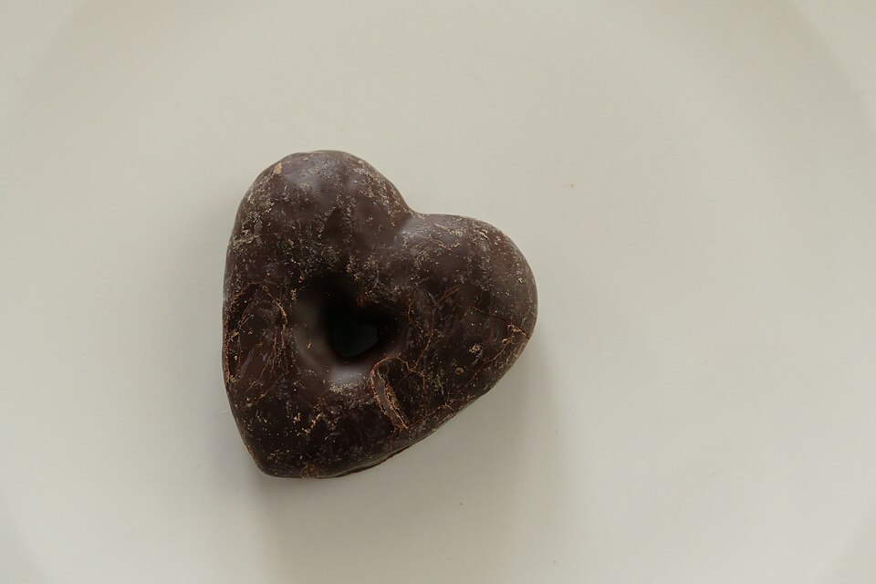

Doces
Bolachinha “Croc” de chocolate

Ingredientes
- 1 xícara (chá) de chocolate em pó Toddy
- 1 xícara (chá) de açúcar
- 1 xícara (chá) de manteiga
- 3 xícaras (chá) de farinha de trigo
- Açúcar cristal para polvilhar (opcional)
Modo de preparo
- Em uma tigela, misture bem todos os ingredientes até formar uma massa homogênea.
- Sobre superfície lisa e enfarinhada, abra a massa com o rolo até cerca de 1 cm de espessura.
- Corte as bolachinhas com o cortador de sua preferência.
- Disponha em forma untada e enfarinhada, com espaço entre elas.
- Asse em forno preaquecido por cerca de 15 minutos (aprox. 180 °C).
- Retire ainda quentes com espátula. Se quiser, passe no açúcar cristal. Guarde em pote com tampa.
Observação: temperatura do forno não vinha na recorte; 180 °C é o usual para este tipo de biscoito.